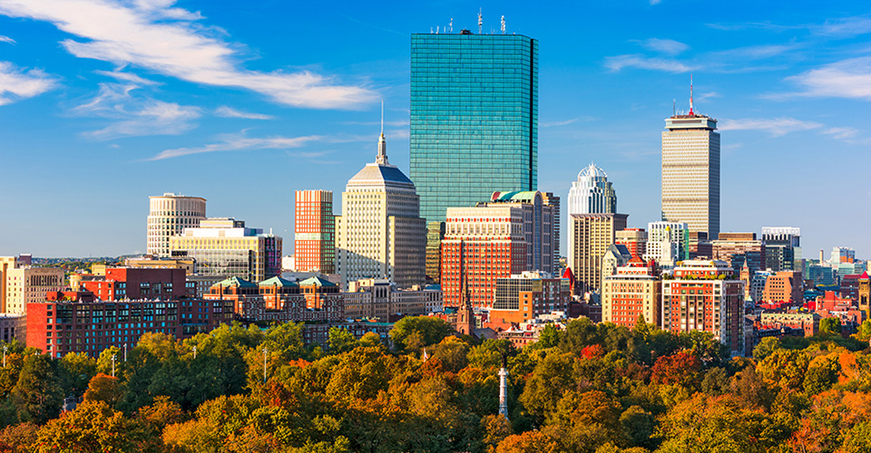

京都は古く詩文において中国王朝の都に因み、洛陽、長安などと呼ばれた。一説に、平安京を東西に分割し、西側（右京）を「長安」、東側（左京）を「洛陽」と呼んだという。ところが、右京すなわち「長安」側は湿地帯が多かったことなどから程なく廃れ、市街地は実質的に左京すなわち「洛陽」だけとなった。このため、「洛陽」とはすなわち京都を指す言葉になり、その一字を採って「洛」だけでも京都を意味することになったとされる。また一説に、平安初期の文学に現れる洛陽、長安はそれぞれ左京、右京を指しているとは考えられず、ともに都全体を指していると考えられるところから、長安とも洛陽とも呼んでいたものが、のちに洛陽のみが使われるようになったと考えられるという。
東京日本橋
何が好きかというと正直な話子供がいないところなのだが、 その他にも店のサービスが良かったりアンテナショップが並んでいたり雰囲気の良い神社があったりと散策が楽しい。 街全体が例の銀行に気を遣っているのもよい。（三井本館は建造物の重要文化財）
天松さんの天丼は散策の途中によく食べる。蓋をあけた瞬間の心の踊り様は何年経っても変わらず。お野菜は季節で変化する。 レンコンが特に好きだ。一階のカウンターで板前さんが揚げるのをわくわく見つめているのもいいが、 春は二階に上がって眼前の桜と共に食したい。1300円。

ボストンはマサチューセッツ州の州都で、同州で最大の都市です。建設は 1630 年で、米国の中でも最も古い都市のひとつです。フリーダム トレイルは建国の歴史やアメリカ独立戦争にまつわる場所をたどる散歩コースで、赤い線が約 4 キロにわたって引かれています。市内の歴史的建造物のひとつであるファニエル ホール集会所は現在ショッピング センターの一部となっており、人気のスポットです。
アメリカン・リーグ創設時から存在する古豪球団。本拠地を移したことが一度もなく、リーグ優勝14回・ワールドシリーズ制覇9回の実績を誇る。伝統的に長打力を重視する、ビッグボール派チームとしても知られている。
過去11度スーパーボウルに出場し、 6度NFLチャンピオンに輝いている。特に2000年代に入ってからはヘッドコーチ・ビル・ベリチックとクォーターバック・トム・ブレイディのもとで2001年、2003年、2004年、2014年、2016年、2018年シーズンとNFLを制している。